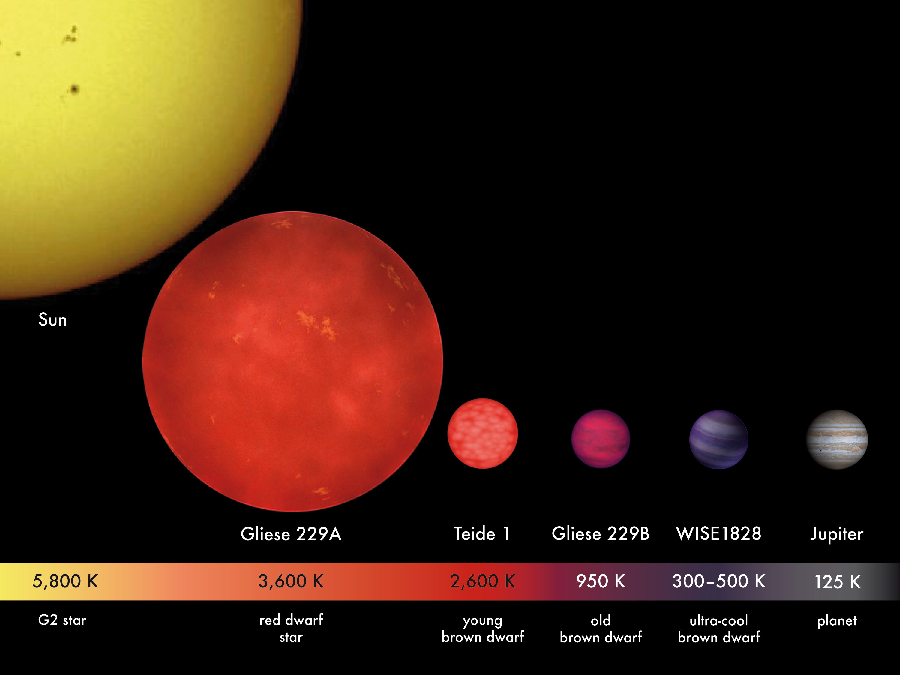
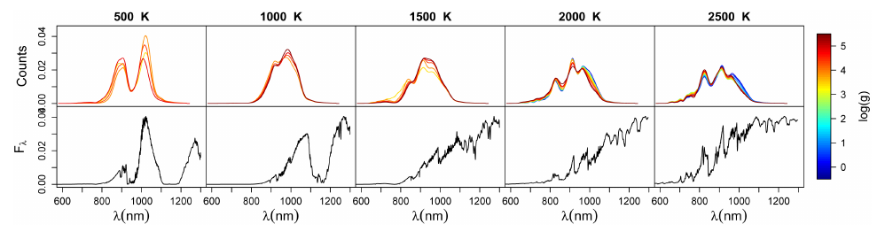
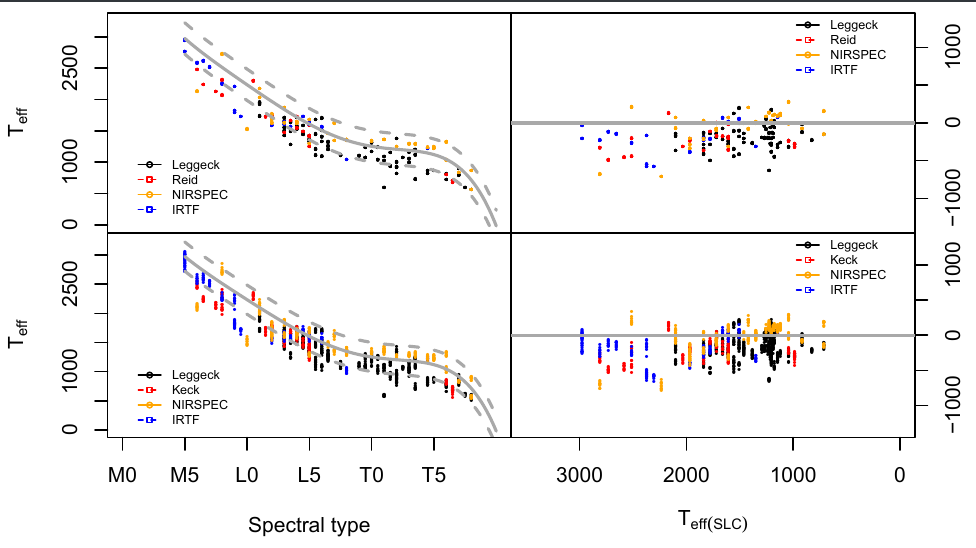
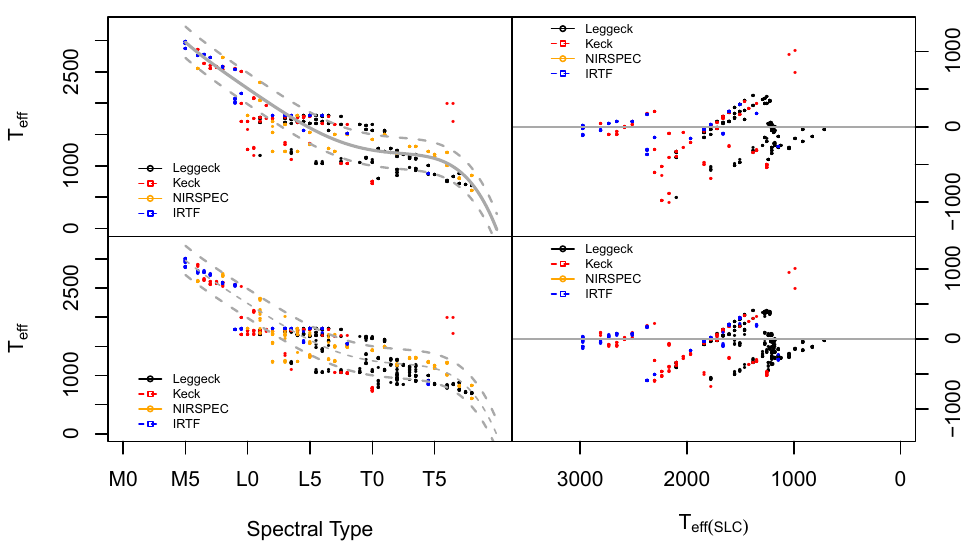
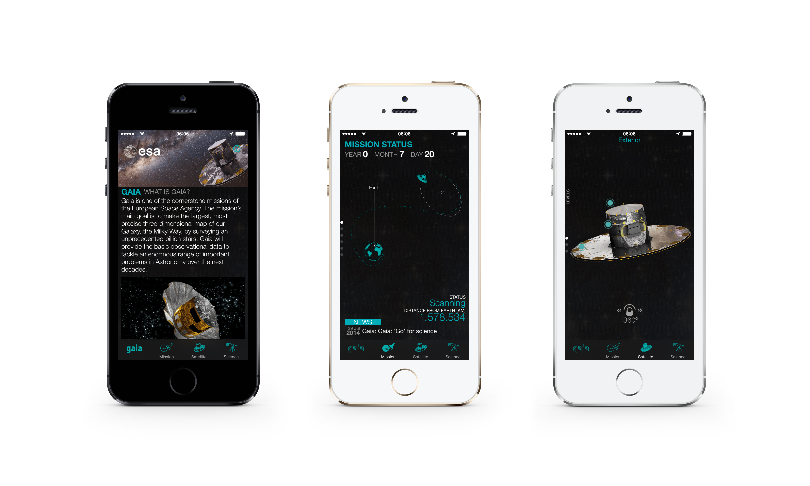

- Introducción: ¿qué es la misión espacial GAIA?
- Los datos: ¿qué son las estrellas de baja masa ?
- Estimación de los parámetros temperatura y gravedad.
- Principales resultados y trabajo futuro.
Estimación de parámetros físicos de estrellas de baja masa
en el marco de la misión espacial GAIA
A. Berihuete, L. M. Sarro, A. Suárez, D. Barrado, C. Carrión, M. Sánchez
SEIO2015
Esquema de la presentación
La misión espacial GAIA
El reto: realizar un censo de mil millones de estrellas.
Reto tecnológico:
- Gaia trazará un mapa de las estrellas desde el punto de Lagrange L2, a una distancia de unos 1.5 millones de kilómetros de la Tierra.
- Mil millones de píxeles en las cámaras CCD.
- Transmitirá 5 años 50 Gb diarios. Al final de la misión, el archivo de datos excederá 1 Petabyte, que es 1 millón de Gbytes o el equivalente a unos 200.000 DVD.
Reto científico:
- Se registrarán un total de 70 mil millones de observaciones, cada una de ellas compuesta a su vez de varios conjuntos de medidas.
- La posición de una estrella Gaia lo hará con una precisión extraordinaria, más allá de los sueños de cualquier astrónomo del pasado.
- La astroestadística, la aplicación de técnicas y modelos estadísticos a la astronomía, una disciplina todavía joven, se ha convertido en un eslabón fundamental para estudiar el 'tsunami' de datos de asteroides, estrellas, galaxias y cuásares que conviven en nuestro espacio exterior.
La misión espacial GAIA
Consorcio para el procesado de datos (DPAC)

La misión espacial GAIA
Consorcio para el procesado de datos (DPAC)

La misión espacial GAIA

CU8 está encargada de la determinación de parámetros astrofísicos. Dichos parámetros se determinan a partir de varios módulos en un pipeline llamado Apsis.
Apsis incluye una clasificación inicial de los objetos en grandes categorías, e integra módulos para estimar parámetros astrofísicos dentro de cada una de esas categorías.
El módulo UCD dentro de Apsis: estrellas ultra frías
Estrellas de baja masa

- Contexto: GAIA contendrá un vasto número de objetos, incluyendo estrellas enanas ultrafrías (temperatura por debajo de 2500 K)
- Objetivo: Abordar la precisión de las estimaciones de la temperatura y gravedad obtenidas a partir de modelos y observaciones actuales.
El módulo UCD dentro de Apsis: estrellas ultra frías
Estrellas de baja masa
Tracks evolutivos

Datos para el módulo UCD. ¿Qué vemos realmente?
Espectros normalizados a partir de los modelos BT-Settl.

Librerías de modelos estelares y los espectros sintéticos asociados ofrecen un conjunto homogéneo que cubren uniformemente el espacio de parámetros. (eno contraste los catálogos) *reproducibilidad
- consistencia
- homogeneidad
- uniformidad
Estas librerías parametrizan los modelos con magnitudes físicas (temperatura efectiva, gravedades, y metalicidades)
Son imperfectas, ya que no pueden reproducir exactamente todas las características de un espectro real UCD.
Los tipos espectrales pueden inferirse sin el uso de modelos sintéticos, pero el camino de espectro a los parámetros físicos necesitan de éstas para su correcta interpretación.
Dado el espectro de baja resolución de GAIA, la mayoría de las características utilizadas para decidir el tipo espectral permanecen no resuletas o innobservadas. Hay que tener cuidado con las interpretaciones.
La red neuronal
Los modelos sintéticos definen la relación entre los espcetros observados por GAIA y los parámetros que queremos estimar $T_{eff}$ y $\log (x)$, temperatura y gravedad. Esta relación es capturada por un modelo de regresión mediante una red neuronal artificial. Perceptron multicapa,
El conjunto de entrenamiento se construye utilizando las librerías sintéticas ($T_{eff} < 4000K$) y transformando el espectro sintético mediante GOG
Resultados utilizando KNN
Obtiene los parámetros como la media ponderada de los elementos en el cojunto de entrenamiento que están más cercas del espectro de entrada para una métrica dada. Dicha métrica es la distancia euclídea y los pesos son la inversa de dicha distancia.
Desventaja, todo el cojunto de datos debe se accesible en todo momento. Y la técnica está afectada de la maldición de la dimensionalidad, es decir, cuando crezca el espacio parámetrico el número de observaciones debe aumentar exponencialmente para mantener una densidad adecuadad de vecinos próximos.

Resultados utilizando procesos gausianos
Se define como una distribución de probabilida sobre las funciones de forma que la probabilidad conjunta de las variables aleatorias definidas por sus evaluaciones en cierto conjunto de vectores ( el training set) es Gaussiano.

Inferencia Bayesiana.
No da una estimación de los parámetros, sino una distribución de probabilidad para los mismos:
$$p (\theta | s) = \frac{p(s|\theta) p(\theta)}{\int p(s|\theta) p(\theta) \, d \theta} $$
donde $\theta = (T_{eff}, \log (g))$. En realidad la verosimilitud es
$$s|\theta = s|(s{model}, \Sigma) \sim \mathcal{N} (s{model},\Sigma) $$
con $s_{model}$ el espectro obtenido mediante la rna para $\theta$.
Inferencia Bayesiana. Nested Sampling
Para caracterizar a $p(\theta|s)$ utilizamos una técnica MCMC llamada Nested Sampling. Brevemente, el algoritmo explora la relación entre la verosimilitud y el volumen de distribución previa definido por
$$X (\lambda) = \int_{p(s|\theta) > \lambda} p(\theta) \, d \theta$$
el volumen de distribución previa contenido en la región paramétrica contenida dentro del iso-contorno $p(s|\theta) > \lambda$

$$p_i = \frac{p(s | \theta_i) \cdot w_i}{\hat{m(s)}},$$
con $wi = 0.5(X{i-1}-Xi)$ y $\hat{T}{eff}= \sum{i = 1}n T{eff, i} \cdot p_i$
Imagen de John Skilling, copiada de la charla
http://www.inference.phy.cam.ac.uk/bayesys/Valencia.pdf
Inferencia Bayesiana. Resultados

Trabajo actual y futuro de la estimación
Ampliar las distribuciones previas a copulas, simulando la relación entre la temperatura y gravedad. Primera aproximación en TFG de Marta Sánchez, obteniendo mejores resultados en la estimación.
Paralelizar la verosimilitud. Primeras pruebas con arquitectura Spark.
Gracias
No oliden descargarse al app!
